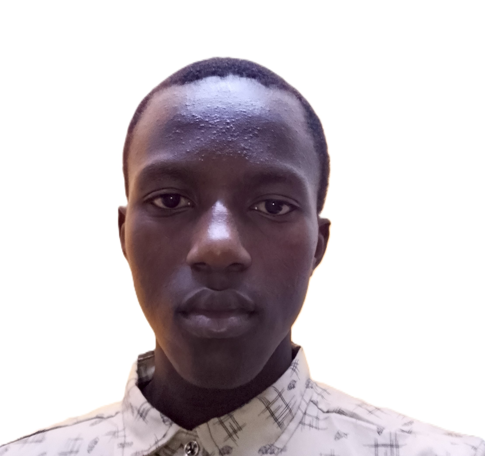

Summary
Hello! My name is Daniel Omondi, a passionate student at Maseno University pursuing a Bachelor of Science in Accounting and Finance with IT.
I am an aspiring CPA and a growing web developer, aiming to become a highly skilled professional in both fields.
Beyond academics, I’m deeply rooted in my faith as a singer and a minister of the Word. I enjoy inspiring others through music and ministry, and I value teamwork, social connections, and building meaningful relationships.
Education Background
Bachelor of Science in Accounting and Finance with IT — Maseno University (2025–)
Work Experience
Career Advisor (2023–2024)
Led about 30 students in choosing the best career paths.
Guidance and Counseling (2022–2024)
Provided counseling sessions to students at Ramba Boys High School.
Skills
- Computer Services 💻🖥️
- Career Development
- Web Development 🕸️
Certificates and Awards
- Career Readiness Certificate — Cooperative Bank Foundation (2025)
- Computer Packages Certificate — St Vincent De Paul ICT Centre (2025)